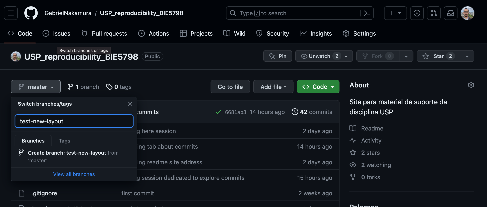
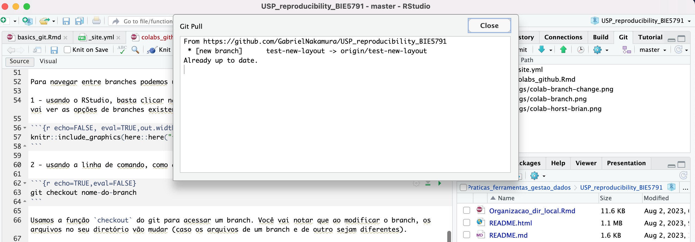
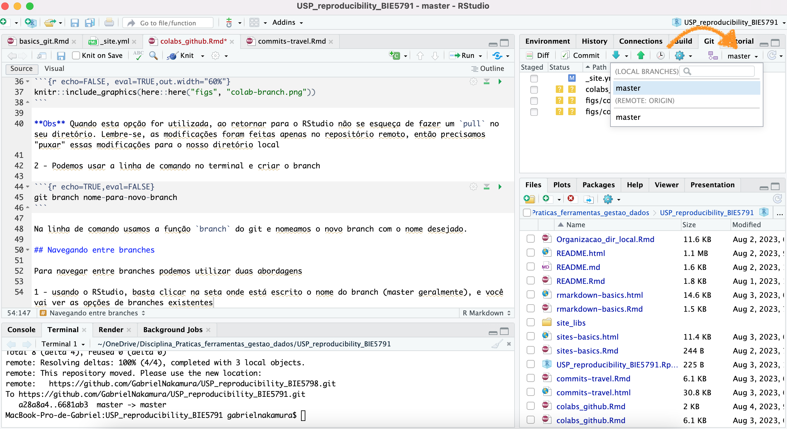
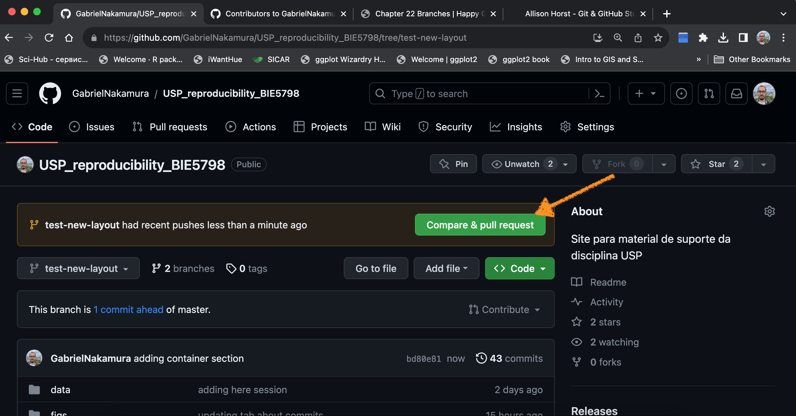

Apresentação
Outra potencialidade do git e GitHub é a possibilidade de utilizar
estas ferramentas para trabalhos colaborativos eficientes. Quem nunca
perdeu aquela versão que o colaborador/colaboradora enviou por email? ou
aquele arquivo importante enviado por Whats? Ou mesmo numa pasta
compartilhada com ferramentas específicas de armazenamento em nuvem,
quem nunca se deparou com “você tem OneDrive? e Google Drive?”.
Pois essa seção visa mostrar o básico sobre trabalho em colaboração
utilizando o GitHub. Nada melhor que começar com essas palavras da Jenny
Brian

Branches
Os branches são versões alternativas do trabalho que fazemos no
main ou master. Em outras palavras, são
desvios de rotas que podem ser usados para testar, por exemplo, análises
diferentes, ou um local seguro para os colaboradores fazerem
modificações que acha pertinente, sem comprometer o trabalho que está
sendo realizado no main, que, vale lembrar, também é um
branch.
Criando um branch
Podemos criar branches de duas formas distintas:
1 - usando o próprio GitHub no browser - nesta opção devemos ir até a
página do repositório e criar um novo branch como demonstrado na imagem
a seguir. Basta clicar em master, digitar um novo nome para o branch e
pedir para criar um novo branch com o nome digitado.

Obs Quando esta opção for utilizada, ao retornar
para o RStudio não se esqueça de fazer um pull no seu
diretório. Lembre-se, as modificações foram feitas apenas no repositório
remoto, então precisamos “puxar” essas modificações para o nosso
diretório local. Após o pull uma mensagem irá aparecer no seu console
(se estiver mexendo na linha de comando), ou num pop-up (se estiver
mexendo no RStudio)

2 - Podemos usar a linha de comando no terminal e criar o branch
git branch nome-para-novo-branch
Na linha de comando usamos a função branch do git e
nomeamos o novo branch com o nome desejado.
Navegando entre branches
Para navegar entre branches podemos utilizar duas abordagens
1 - usando o RStudio, basta clicar na seta onde está escrito o nome
do branch (master geralmente), e você vai ver as opções de branches
existentes

2 - usando a linha de comando, como demosntrado abaixo
git checkout nome-do-branch
Usamos a função checkout do git para acessar um branch.
Você vai notar que ao modificar o branch, os arquivos no seu diretório
vão mudar (caso os arquivos de um branch e de outro sejam
diferentes).
Fusionando os branches (merge)
Vamos supor que estamos trabalhando em conjunto com outros
colaboradores. O seu colaborador teve uma ideia que pode melhor o
trabalho que está fazendo, por exemplo, adicionando um novo modelo para
análise de dados. O colaborador/colaboradora resolve implementar esta
modificação em um novo branch. Essa implementação funciona melhor que a
anterior e então resolvemos adotar ela como a nova estratégia de análise
de dados. Mas ela vive em um branch diferente do main,
sendo que o ideal é que ela seja incorporada no main. Ou seja, queremos
fusionar o branch do colaborador/colaboradora, ao passo que mantemos as
modificações no branch main. Fazemos isso com um a função
merge do git.
De novo, existem duas formas de se fazer isso
1 - utilizando o GitHub online. Navegue até a página do seu
repositório. Acesse o branch que quer fazer o merge no branch main. Note
que, em caso de diferenças entre os branches, uma mensagem aparecerá
perguntando se você quer comparar os branches e abrir um pull-request,
como na imagem abaixo

Neste momento, o github está te dizendo: “Existe uma diferença entre
o branch main e o branch novo criado, você quer revisar essas
modificações e abrir um pull-request para o proprietário deste
repositório?, e depois quer fusionar esses branches?” Com isso você pode
mergir os branches. OBS lembre-se de que quando voltar
para o RStudio você precisa dar um pull
2 - podemos utilizar a linha de comando. Nela vá até o branch que
deseja incorporar as mudanças do outro branch, e use a função
mergedo git
git checkout main
git merge nome-do-branch
Pronto, agora o branch main incorporou as modificações
do branch nome-do-branch
Prática
Como prática sugerimos que os estudantes se juntem em duplas e
simulem um trabalho colaborativo. O roteiro seria mais ou menos
esse:
1 - Uma pessoa convida um colaborador para o seu repositório no
Github. A pessoa convidada deve aceitar o convite.
2 - O colaborador deve criar um novo branch seguindo uma das formas
ilustradas acima (ou outra que ache mais conveniente)
3 - Faça algumas modificações no branch novo criado e faça um
pull-request
4 - A pessoa responsável pelo repositório deve revisar o pull-request
e incorporar as sugestões no branch main
LS0tCnRpdGxlOiAnVHJhYmFsaG8gZW0gY29sYWJvcmHDp8OjbycKYXV0aG9yOiAiR2FicmllbCBOYWthbXVyYSIKZGF0ZTogImByIFN5cy5EYXRlKClgIgpvdXRwdXQ6IGh0bWxfZG9jdW1lbnQKLS0tCgpgYGB7ciBzZXR1cCwgaW5jbHVkZT1GQUxTRX0Ka25pdHI6Om9wdHNfY2h1bmskc2V0KGVjaG8gPSBUUlVFLCBmaWcuYWxpZ24gPSAiY2VudGVyIikKYGBgCgpgYGB7ciBrbGlwcHksIGVjaG89RkFMU0UsIGluY2x1ZGU9VFJVRX0Ka2xpcHB5OjprbGlwcHkoKQpgYGAKCiMgQXByZXNlbnRhw6fDo28KCk91dHJhIHBvdGVuY2lhbGlkYWRlIGRvIGdpdCBlIEdpdEh1YiDDqSBhIHBvc3NpYmlsaWRhZGUgZGUgdXRpbGl6YXIgZXN0YXMgZmVycmFtZW50YXMgcGFyYSB0cmFiYWxob3MgY29sYWJvcmF0aXZvcyBlZmljaWVudGVzLiBRdWVtIG51bmNhIHBlcmRldSBhcXVlbGEgdmVyc8OjbyBxdWUgbyBjb2xhYm9yYWRvci9jb2xhYm9yYWRvcmEgZW52aW91IHBvciBlbWFpbD8gb3UgYXF1ZWxlIGFycXVpdm8gaW1wb3J0YW50ZSBlbnZpYWRvIHBvciBXaGF0cz8gT3UgbWVzbW8gbnVtYSBwYXN0YSBjb21wYXJ0aWxoYWRhIGNvbSBmZXJyYW1lbnRhcyBlc3BlY8OtZmljYXMgZGUgYXJtYXplbmFtZW50byBlbSBudXZlbSwgcXVlbSBudW5jYSBzZSBkZXBhcm91IGNvbSAidm9jw6ogdGVtIE9uZURyaXZlPyBlIEdvb2dsZSBEcml2ZT8iLgoKUG9pcyBlc3NhIHNlw6fDo28gdmlzYSBtb3N0cmFyIG8gYsOhc2ljbyBzb2JyZSB0cmFiYWxobyBlbSBjb2xhYm9yYcOnw6NvIHV0aWxpemFuZG8gbyBHaXRIdWIuIE5hZGEgbWVsaG9yIHF1ZSBjb21lw6dhciBjb20gZXNzYXMgcGFsYXZyYXMgZGEgSmVubnkgQnJpYW4KCmBgYHtyIGVjaG89RkFMU0UsIGV2YWw9VFJVRSxvdXQud2lkdGg9IjYwJSJ9CmtuaXRyOjppbmNsdWRlX2dyYXBoaWNzKGhlcmU6OmhlcmUoImZpZ3MiLCAiY29sYWItaG9yc3QtYnJpYW4ucG5nIikpCmBgYAoKIyBCcmFuY2hlcwoKT3MgYnJhbmNoZXMgc8OjbyB2ZXJzw7VlcyBhbHRlcm5hdGl2YXMgZG8gdHJhYmFsaG8gcXVlIGZhemVtb3Mgbm8gYG1haW5gIG91IGBtYXN0ZXJgLiBFbSBvdXRyYXMgcGFsYXZyYXMsIHPDo28gZGVzdmlvcyBkZSByb3RhcyBxdWUgcG9kZW0gc2VyIHVzYWRvcyBwYXJhIHRlc3RhciwgcG9yIGV4ZW1wbG8sIGFuw6FsaXNlcyBkaWZlcmVudGVzLCBvdSB1bSBsb2NhbCBzZWd1cm8gcGFyYSBvcyBjb2xhYm9yYWRvcmVzIGZhemVyZW0gbW9kaWZpY2HDp8O1ZXMgcXVlIGFjaGEgcGVydGluZW50ZSwgc2VtIGNvbXByb21ldGVyIG8gdHJhYmFsaG8gcXVlIGVzdMOhIHNlbmRvIHJlYWxpemFkbyBubyBgbWFpbmAsIHF1ZSwgdmFsZSBsZW1icmFyLCB0YW1iw6ltIMOpIHVtIGJyYW5jaC4KCiMjIENyaWFuZG8gdW0gYnJhbmNoCgpQb2RlbW9zIGNyaWFyIGJyYW5jaGVzIGRlIGR1YXMgZm9ybWFzIGRpc3RpbnRhczogCgoxIC0gdXNhbmRvIG8gcHLDs3ByaW8gR2l0SHViIG5vIGJyb3dzZXIgLSBuZXN0YSBvcMOnw6NvIGRldmVtb3MgaXIgYXTDqSBhIHDDoWdpbmEgZG8gcmVwb3NpdMOzcmlvIGUgY3JpYXIgdW0gbm92byBicmFuY2ggY29tbyBkZW1vbnN0cmFkbyBuYSBpbWFnZW0gYSBzZWd1aXIuIEJhc3RhIGNsaWNhciBlbSBtYXN0ZXIsIGRpZ2l0YXIgdW0gbm92byBub21lIHBhcmEgbyBicmFuY2ggZSBwZWRpciBwYXJhIGNyaWFyIHVtIG5vdm8gYnJhbmNoIGNvbSBvIG5vbWUgZGlnaXRhZG8uCgpgYGB7ciBlY2hvPUZBTFNFLCBldmFsPVRSVUUsb3V0LndpZHRoPSI2MCUifQprbml0cjo6aW5jbHVkZV9ncmFwaGljcyhoZXJlOjpoZXJlKCJmaWdzIiwgImNvbGFiLWJyYW5jaC5wbmciKSkKYGBgCgoqKk9icyoqIFF1YW5kbyBlc3RhIG9ww6fDo28gZm9yIHV0aWxpemFkYSwgYW8gcmV0b3JuYXIgcGFyYSBvIFJTdHVkaW8gbsOjbyBzZSBlc3F1ZcOnYSBkZSBmYXplciB1bSBgcHVsbGAgbm8gc2V1IGRpcmV0w7NyaW8uIExlbWJyZS1zZSwgYXMgbW9kaWZpY2HDp8O1ZXMgZm9yYW0gZmVpdGFzIGFwZW5hcyBubyByZXBvc2l0w7NyaW8gcmVtb3RvLCBlbnTDo28gcHJlY2lzYW1vcyAicHV4YXIiIGVzc2FzIG1vZGlmaWNhw6fDtWVzIHBhcmEgbyBub3NzbyBkaXJldMOzcmlvIGxvY2FsLiBBcMOzcyBvIHB1bGwgdW1hIG1lbnNhZ2VtIGlyw6EgYXBhcmVjZXIgbm8gc2V1IGNvbnNvbGUgKHNlIGVzdGl2ZXIgbWV4ZW5kbyBuYSBsaW5oYSBkZSBjb21hbmRvKSwgb3UgbnVtIHBvcC11cCAoc2UgZXN0aXZlciBtZXhlbmRvIG5vIFJTdHVkaW8pCgpgYGB7ciBlY2hvPUZBTFNFLCBldmFsPVRSVUUsb3V0LndpZHRoPSI2MCUifQprbml0cjo6aW5jbHVkZV9ncmFwaGljcyhoZXJlOjpoZXJlKCJmaWdzIiwgIm5ldy1icmFuY2gtcHVsbC5wbmciKSkKYGBgCgoKMiAtIFBvZGVtb3MgdXNhciBhIGxpbmhhIGRlIGNvbWFuZG8gbm8gdGVybWluYWwgZSBjcmlhciBvIGJyYW5jaAoKYGBge3IgZWNobz1UUlVFLGV2YWw9RkFMU0V9CmdpdCBicmFuY2ggbm9tZS1wYXJhLW5vdm8tYnJhbmNoCmBgYAoKTmEgbGluaGEgZGUgY29tYW5kbyB1c2Ftb3MgYSBmdW7Dp8OjbyBgYnJhbmNoYCBkbyBnaXQgZSBub21lYW1vcyBvIG5vdm8gYnJhbmNoIGNvbSBvIG5vbWUgZGVzZWphZG8uCgojIyBOYXZlZ2FuZG8gZW50cmUgYnJhbmNoZXMKClBhcmEgbmF2ZWdhciBlbnRyZSBicmFuY2hlcyBwb2RlbW9zIHV0aWxpemFyIGR1YXMgYWJvcmRhZ2VucwoKMSAtIHVzYW5kbyBvIFJTdHVkaW8sIGJhc3RhIGNsaWNhciBuYSBzZXRhIG9uZGUgZXN0w6EgZXNjcml0byBvIG5vbWUgZG8gYnJhbmNoIChtYXN0ZXIgZ2VyYWxtZW50ZSksIGUgdm9jw6ogdmFpIHZlciBhcyBvcMOnw7VlcyBkZSBicmFuY2hlcyBleGlzdGVudGVzCgpgYGB7ciBlY2hvPUZBTFNFLCBldmFsPVRSVUUsb3V0LndpZHRoPSI2MCUifQprbml0cjo6aW5jbHVkZV9ncmFwaGljcyhoZXJlOjpoZXJlKCJmaWdzIiwgImNvbGFiLWJyYW5jaC1jaGFuZ2UucG5nIikpCmBgYAoKMiAtIHVzYW5kbyBhIGxpbmhhIGRlIGNvbWFuZG8sIGNvbW8gZGVtb3NudHJhZG8gYWJhaXhvCgpgYGB7ciBlY2hvPVRSVUUsZXZhbD1GQUxTRX0KZ2l0IGNoZWNrb3V0IG5vbWUtZG8tYnJhbmNoCmBgYAoKVXNhbW9zIGEgZnVuw6fDo28gYGNoZWNrb3V0YCBkbyBnaXQgcGFyYSBhY2Vzc2FyIHVtIGJyYW5jaC4gVm9jw6ogdmFpIG5vdGFyIHF1ZSBhbyBtb2RpZmljYXIgbyBicmFuY2gsIG9zIGFycXVpdm9zIG5vIHNldSBkaXJldMOzcmlvIHbDo28gbXVkYXIgKGNhc28gb3MgYXJxdWl2b3MgZGUgdW0gYnJhbmNoIGUgZGUgb3V0cm8gc2VqYW0gZGlmZXJlbnRlcykuCgojIyBGdXNpb25hbmRvIG9zIGJyYW5jaGVzIChtZXJnZSkKClZhbW9zIHN1cG9yIHF1ZSBlc3RhbW9zIHRyYWJhbGhhbmRvIGVtIGNvbmp1bnRvIGNvbSBvdXRyb3MgY29sYWJvcmFkb3Jlcy4gTyBzZXUgY29sYWJvcmFkb3IgdGV2ZSB1bWEgaWRlaWEgcXVlIHBvZGUgbWVsaG9yIG8gdHJhYmFsaG8gcXVlIGVzdMOhIGZhemVuZG8sIHBvciBleGVtcGxvLCBhZGljaW9uYW5kbyB1bSBub3ZvIG1vZGVsbyBwYXJhIGFuw6FsaXNlIGRlIGRhZG9zLiBPIGNvbGFib3JhZG9yL2NvbGFib3JhZG9yYSByZXNvbHZlIGltcGxlbWVudGFyIGVzdGEgbW9kaWZpY2HDp8OjbyBlbSB1bSBub3ZvIGJyYW5jaC4gRXNzYSBpbXBsZW1lbnRhw6fDo28gZnVuY2lvbmEgbWVsaG9yIHF1ZSBhIGFudGVyaW9yIGUgZW50w6NvIHJlc29sdmVtb3MgYWRvdGFyIGVsYSBjb21vIGEgbm92YSBlc3RyYXTDqWdpYSBkZSBhbsOhbGlzZSBkZSBkYWRvcy4gTWFzIGVsYSB2aXZlIGVtIHVtIGJyYW5jaCBkaWZlcmVudGUgZG8gYG1haW5gLCBzZW5kbyBxdWUgbyBpZGVhbCDDqSBxdWUgZWxhIHNlamEgaW5jb3Jwb3JhZGEgbm8gbWFpbi4gT3Ugc2VqYSwgcXVlcmVtb3MgZnVzaW9uYXIgbyBicmFuY2ggZG8gY29sYWJvcmFkb3IvY29sYWJvcmFkb3JhLCBhbyBwYXNzbyBxdWUgbWFudGVtb3MgYXMgbW9kaWZpY2HDp8O1ZXMgbm8gYnJhbmNoIG1haW4uIEZhemVtb3MgaXNzbyBjb20gdW0gYSBmdW7Dp8OjbyBgbWVyZ2VgIGRvIGdpdC4KCkRlIG5vdm8sIGV4aXN0ZW0gZHVhcyBmb3JtYXMgZGUgc2UgZmF6ZXIgaXNzbwoKMSAtIHV0aWxpemFuZG8gbyBHaXRIdWIgb25saW5lLiBOYXZlZ3VlIGF0w6kgYSBww6FnaW5hIGRvIHNldSByZXBvc2l0w7NyaW8uIEFjZXNzZSBvIGJyYW5jaCBxdWUgcXVlciBmYXplciBvIG1lcmdlIG5vIGJyYW5jaCBtYWluLiBOb3RlIHF1ZSwgZW0gY2FzbyBkZSBkaWZlcmVuw6dhcyBlbnRyZSBvcyBicmFuY2hlcywgdW1hIG1lbnNhZ2VtIGFwYXJlY2Vyw6EgcGVyZ3VudGFuZG8gc2Ugdm9jw6ogcXVlciBjb21wYXJhciBvcyBicmFuY2hlcyBlIGFicmlyIHVtIHB1bGwtcmVxdWVzdCwgY29tbyBuYSBpbWFnZW0gYWJhaXhvCgpgYGB7ciBlY2hvPUZBTFNFLCBldmFsPVRSVUUsb3V0LndpZHRoPSI2MCUifQprbml0cjo6aW5jbHVkZV9ncmFwaGljcyhoZXJlOjpoZXJlKCJmaWdzIiwgIm1lcmdlLXB1bGwtcmVxdWVzdC5wbmciKSkKYGBgCgpOZXN0ZSBtb21lbnRvLCBvIGdpdGh1YiBlc3TDoSB0ZSBkaXplbmRvOiAiRXhpc3RlIHVtYSBkaWZlcmVuw6dhIGVudHJlIG8gYnJhbmNoIG1haW4gZSBvIGJyYW5jaCBub3ZvIGNyaWFkbywgdm9jw6ogcXVlciByZXZpc2FyIGVzc2FzIG1vZGlmaWNhw6fDtWVzIGUgYWJyaXIgdW0gcHVsbC1yZXF1ZXN0IHBhcmEgbyBwcm9wcmlldMOhcmlvIGRlc3RlIHJlcG9zaXTDs3Jpbz8sIGUgZGVwb2lzIHF1ZXIgZnVzaW9uYXIgZXNzZXMgYnJhbmNoZXM/IiBDb20gaXNzbyB2b2PDqiBwb2RlIG1lcmdpciBvcyBicmFuY2hlcy4gKipPQlMqKiBsZW1icmUtc2UgZGUgcXVlIHF1YW5kbyB2b2x0YXIgcGFyYSBvIFJTdHVkaW8gdm9jw6ogcHJlY2lzYSBkYXIgdW0gYHB1bGxgCgoyIC0gcG9kZW1vcyB1dGlsaXphciBhIGxpbmhhIGRlIGNvbWFuZG8uIE5lbGEgdsOhIGF0w6kgbyBicmFuY2ggcXVlIGRlc2VqYSBpbmNvcnBvcmFyIGFzIG11ZGFuw6dhcyBkbyBvdXRybyBicmFuY2gsIGUgdXNlIGEgZnVuw6fDo28gYG1lcmdlYGRvIGdpdCAKCmBgYHtyIGVjaG89VFJVRSxldmFsPUZBTFNFfQpnaXQgY2hlY2tvdXQgbWFpbgpnaXQgbWVyZ2Ugbm9tZS1kby1icmFuY2gKYGBgCgpQcm9udG8sIGFnb3JhIG8gYnJhbmNoIGBtYWluYCBpbmNvcnBvcm91IGFzIG1vZGlmaWNhw6fDtWVzIGRvIGJyYW5jaCBgbm9tZS1kby1icmFuY2hgCgoKIyBQcsOhdGljYQoKQ29tbyBwcsOhdGljYSBzdWdlcmltb3MgcXVlIG9zIGVzdHVkYW50ZXMgc2UganVudGVtIGVtIGR1cGxhcyBlIHNpbXVsZW0gdW0gdHJhYmFsaG8gY29sYWJvcmF0aXZvLiBPIHJvdGVpcm8gc2VyaWEgbWFpcyBvdSBtZW5vcyBlc3NlOgoKMSAtIFVtYSBwZXNzb2EgY29udmlkYSB1bSBjb2xhYm9yYWRvciBwYXJhIG8gc2V1IHJlcG9zaXTDs3JpbyBubyBHaXRodWIuIEEgcGVzc29hIGNvbnZpZGFkYSBkZXZlIGFjZWl0YXIgbyBjb252aXRlLiAKCjIgLSBPIGNvbGFib3JhZG9yIGRldmUgY3JpYXIgdW0gbm92byBicmFuY2ggc2VndWluZG8gdW1hIGRhcyBmb3JtYXMgaWx1c3RyYWRhcyBhY2ltYSAob3Ugb3V0cmEgcXVlIGFjaGUgbWFpcyBjb252ZW5pZW50ZSkKCjMgLSBGYcOnYSBhbGd1bWFzIG1vZGlmaWNhw6fDtWVzIG5vIGJyYW5jaCBub3ZvIGNyaWFkbyBlIGZhw6dhIHVtIHB1bGwtcmVxdWVzdAoKNCAtIEEgcGVzc29hIHJlc3BvbnPDoXZlbCBwZWxvIHJlcG9zaXTDs3JpbyBkZXZlIHJldmlzYXIgbyBwdWxsLXJlcXVlc3QgZSBpbmNvcnBvcmFyIGFzIHN1Z2VzdMO1ZXMgbm8gYGJyYW5jaCBtYWluYAoKCiMgUmVmZXLDqm5jaWFzCgpDb21vIHNlbXByZSwgbyBsaXZybyBkYSBKZW5ueSBCcmlhbiAtIEhhcHB5IEdpdCBhbmQgR2l0SHViIGZvciB0aGUgVXNlUg==